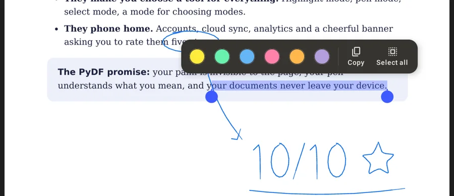
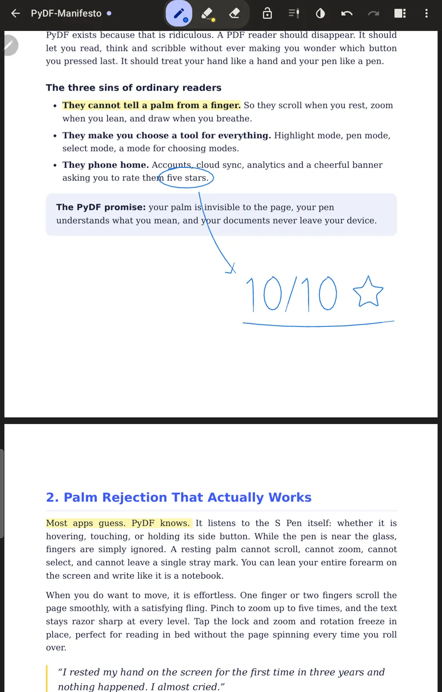
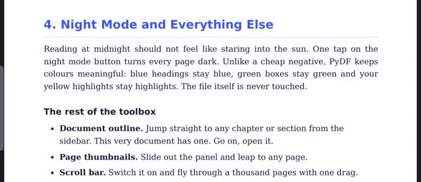
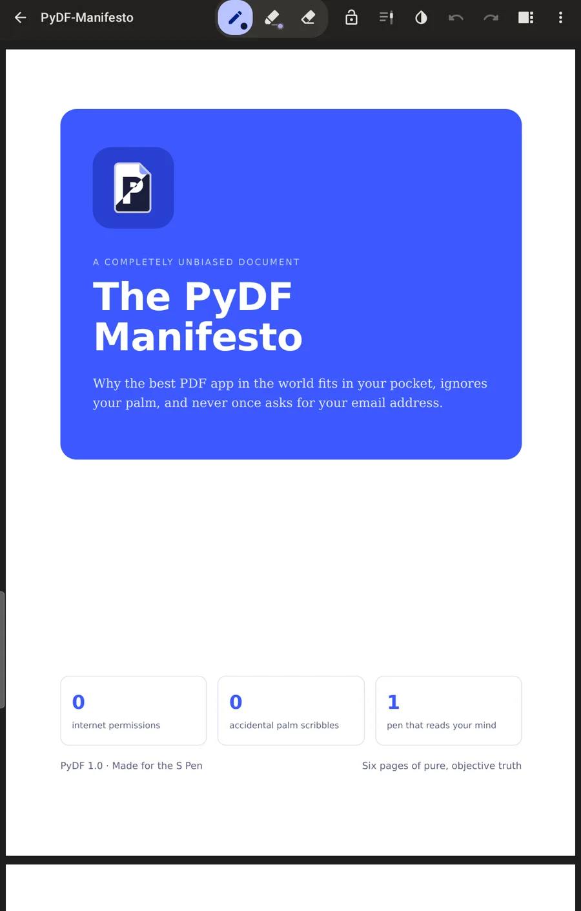
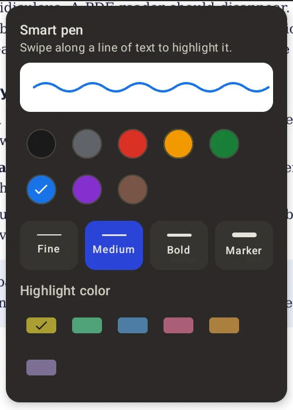
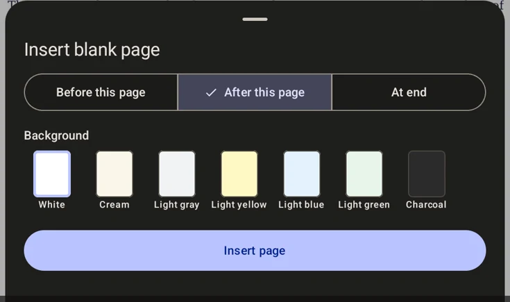
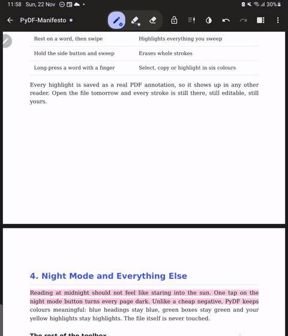
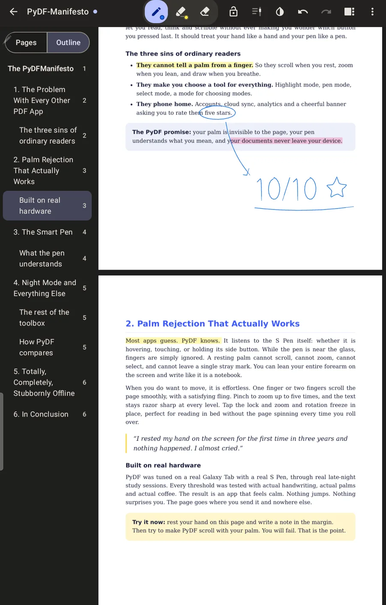
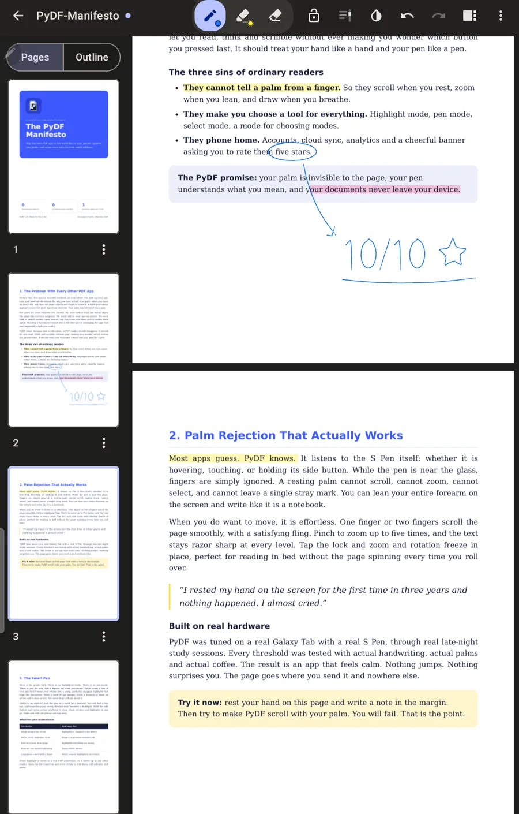
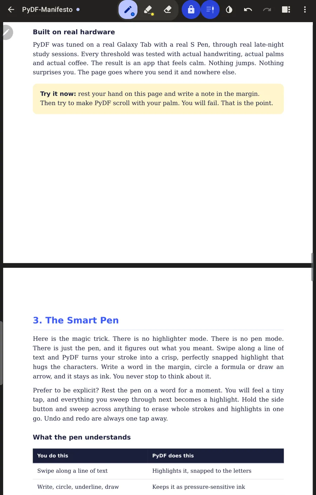

Long-press to select, Edge-style
Hold a word with your finger, drag the handles, then highlight in six colours, copy the text, or select the whole page.

A Smart PDF annotator specialized for reading. Your palm never draws, never scrolls, never zooms. The pen just writes.

There's no highlighter mode and no pen mode. Swipe along a line of text and it turns into a crisp highlight snapped to the letters. Write anywhere else and it stays ink.
| Swipe along a line of text | Highlight |
| Write, circle, underline, draw | Ink |
| Rest the pen on a word, then sweep | Highlight everything |
| Hold the S Pen button and sweep | Erase whole strokes |

PyDF listens to the S Pen itself: hovering, touching, holding its button. While the pen is near the glass, fingers are ignored. Lean your whole hand on the screen and write like it's a notebook.

Hold a word with your finger, drag the handles, then highlight in six colours, copy the text, or select the whole page.

Eight ink colours, four widths and six highlight shades, with a live preview.

Insert blank pages before, after or at the end, in seven paper colours, including a moody charcoal.

Annotations save as standard PDF annotations, so they show up in any viewer. Atomic saves, crash recovery, and undo for everything.
One tap turns every page dark. Unlike a cheap negative, colours keep their meaning: blue headings stay blue, your highlights stay highlights. The file itself is never touched.

Instant. No reloading and no waiting. Drag the slider on the right to compare day and night on the same page.
Jump straight to any chapter, skim page thumbnails, or switch on a scroll bar and fly. Lock zoom and rotation for reading in bed.

Every chapter and section in the sidebar, with the one you're reading highlighted.

See every page at a glance, annotations included. Tap to jump.

Freeze zoom and rotation with one tap, and drag the scroll bar to move fast.
PyDF has no internet permission. Android won't let it connect anywhere, even if it wanted to. Your documents and your notes stay on your device. Full stop.
PyDF is built exclusively around Samsung's magnetic, battery-free S Pen, including its hover and its side button. Palm rejection and the smart pen depend on it.
Designed and tuned on the Galaxy Tab S6 Lite.
Galaxy Note series and Galaxy S Ultra. Android 11 or newer.
Devices without an S Pen, capacitive or universal styluses, and Bluetooth-only pens.
Free, open source, and yours. No sign-up, no subscription.